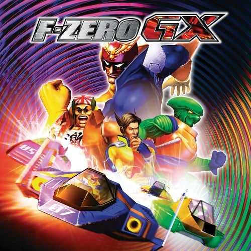
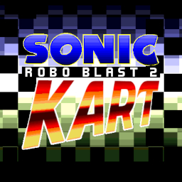

Hobbies
V-tuber & VRChat Streams


Custom Game Mods
Through the magic of third dimensional technology, Kingsley has had the chance to appear in three famous games to date, Half Life (Sven Co-op), Tony Hawk's Underground 2 (THUG PRO), and Sonic Adventure 2. Check out the mods and play as your favorite purple friend!Video Games
An undeniable influence for my creative works is video games, a number of racing games and other leaderboard based titles catch my interest, such as these below. Check my records, maybe you can keep up with me?! 


Other Interests
Outside the virtual cyberspace, I do actually go outside from time to time (hard to believe I know).I have attended various furry events over time, including Megaplex, the Freedom Lake Park Furmeet, and others in the southern US. I've had a wonderful time meeting many people and making lifelong memories, and look forward to many more events in the future. Language learning has caught my interest in the last couple of years, specifically learning Japanese (nerdy I know), I am not a great student, but I would like to attend a Japanese Kemono meetup someday. すみません、少し日本語が話せます。On top of this, I would like to travel more, possibly overseas for the first time, and also invest towards home ownership sometime in the future (a pipe dream in this economy!). I also want to see about learning some sort of game development skills, although most of my interest is from the art side, not much interest in coding. And aside from all this, you can read even more in the About page.
© fuzai neko 2023